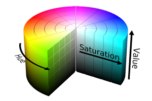
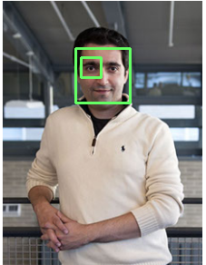

Weekly Experiences
We focused on a different aspect of programming autonomous vehicles during each of the four weeks. In the first week, we became familiar with the Robot Operating System (ROS) and how to control our cars. In week two, we learned about perception and image processing. In week three, we learned about autonomous exploration and obstacle evasion. Lastly, we learned about localization and mapping.
Week 1
The main goal of the first week was to gain familiarity with the RACECARs and with the Robot Operating System (ROS). The week concluded with a wall-following drag race.
ROS is an open source framework which provides many tools and libraries that greatly ease robot software development (http://www.ros.org/about-ros/). It is well-established and used in industry. For example, the NASA/GM Robonaut 2 aboard the International Space Station runs ROS (Programming Robots with ROS). ROS's guiding principle is modularity, which is one of the reasons for its use in complex projects. A ROS package consists of nodes, which are simply programs, that perform tasks and communicate to each other through messages. This peer-to-peer structure is what gives ROS its modularity, which greatly simplifies delegating work and testing.
Kyle Edelman from the NASA Jet Propulsion Laboratory (JPL) gave two lectures on control systems. The goal of a controller is to bring the error, which is calculated given the desired state and the current state, to zero. In open-loop control, the controller only takes in the desired state as input, while in closed-loop control, the controller also takes in output from sensors as input. In other words, closed-loop control takes feedback whereas open-loop control does not.
Edelman explained two different controllers: bang-bang and proportional-integral-derivative (PID). Bang-bang is the simplest type of controller, but it may never reach a steady state. A bang-bang controller consists of several discrete groups of inputs that each produce a certain, hard-coded output. A robot whose direction is controlled by a bang-bang controller may produce the following position vs. time graph:
On the other hand, PID controllers produce an output based on the error, the integral of the error with respect to time, and the derivative of the error with respect to time. Formally:
$$u(t) = K_{p}e(t) + K_{i}\int e(\tau)d\tau + K_{d}\frac{de(t)}{dt}$$
where $K_p$, $K_i$, and $K_d$ are nonnegative coefficients for the proportional, integral, and derivative terms, respectively. The proportional term is the main term, the integral term helps to drive the error to zero more quickly, and the derivative term dampens the controller to provide stability. In unstable systems, the error gradually increases as the controller continuously overshoots the desired state. An unstable system may produce a graph like the following:
On the other hand, a properly tuned PID controller would produce results like the following, eventually resulting in a steady state:
The coefficients are generally tuned empirically. To do so, initially only have a proportional term and increase $K_p$ until the system becomes unstable. Then lower $K_p$ so that the system becomes stable and add an integral term, increasing $K_i$ until the system reaches a steady state in reasonable time. Then add a derivative term, increasing $K_d$ until the system is stable.
The challenge for the week was to use our knowledge of control systems and ROS to program a wall-follower. Our wall-follower used data from a Lidar as input. The Lidar gathers data along a 2-dimensional plane and returns a list of ranges, which are distances to objects. In total, it returns 1081 evenly spaced ranges over 270°, essentially giving points in polar coordinates. One problem was to figure out the car’s perpendicular distance to the wall. We had to consider that the car would not always be parallel to the wall, and in fact could likely be at quite a steep angle to the wall. We first tried to come up with a solution involving triangulation. However, a team member realized that the car’s perpendicular distance to the wall is simply the closest range returned. Thus, our program was able to determine the car’s perpendicular distance to the wall much more simply and perhaps more reliably than most other teams.
The next part was programming a controller for the car’s steering angle. We started off creating a bang-bang controller that worked but was far from optimal as it drove from side to side. We then created a PID controller. We needed to tune the PID values such that the car would stay reasonably close to the wall without ever hitting it. Through experimentation, our coefficients were $K_p=0.5$, $K_i=0.1$, and $K_d=0.05$. Our car was successfully able to follow a wall, along with following curves along the wall.
Lastly, we created a safety node. This node listened to the Lidar’s scan topic and backed up the car if it came too close to an object. Using a sliding window algorithm, the safety node was able to discern narrow objects such as poles while also accounting for noise in the Lidar’s data. The sliding window algorithm searches for strings of similarly far away points and detects these as objects, but accounts for noise by allowing for some discontinuity along the objects. The safety node was left constantly running, as it would override all the other nodes and prevent the car from crashing into objects.
Week 2
The main goal of the second week was to learn basic image processing with OpenCV and NumPy. The week concluded with a race in which the car had to detect and drive to a colored blob (a rectangular piece of construction paper) and then turn left or right based on the color of the blob—left if red, right if green.
There were two lectures on robot perception and image processing, one by Professor Sertac Karaman from MIT Aeronautics and Astronautics, and one by Alexey Abramov from the Continental Corporation. First, we learned about the Hue-Saturation-Value (HSV) color space, which is generally used in image processing because of the hue property’s resistance to changes in brightness. The lecturers explained edge detection and object perception algorithms such as the RANSAC algorithm and Hough transforms. There were also two lectures on visual servoing by Renaud Detry and Jeremie Papon from JPL. Visual servoing is the act of controlling a robot’s motion based on visual feedback, i.e. data collected from visual sensors.
The first part of the week’s problem was blob detection. We first used the OpenCV SimpleBlobDetector class to do detect blobs, and then we switched over to OpenCV’s contour methods for more functionality. Our blob detector first filters out a certain color, either red or green in this case, using OpenCV’s inRange() function. We empirically tuned the minimum and maximum HSV values to retain blobs of the desired color while filtering out everything else. We then used the findContours() function to find the blobs and determine information about them such as size and center. Then we smoothed out the contours using the approxPolyDP() function and filtered out any contours that were not four-sided. Finally, we used the drawContours() function to draw the processed blobs on the original image.
The last part was visual servoing. The desired position of the center of the blob was the center of the image. Our program calculates the actual position of the center of the blob using the moments() function. The program then uses a PID controller to determine the steering angle of the car. The car had to drive into a box in front of the blob, so once the blob filled at least 11% of the screen horizontally, the car stopped and initiated a turn based on the color of the blob. However, the car could not turn immediately, because then it would hit the wall. Therefore, the program first backed up the car and then performed a quarter-turn. Each of these steps was written within a separate function, and each function called on the next once it was finished.
Our car was quite successful and was the only one to make all three turns without hitting the wall. The video below was taken from the car's perspective.
Week 3
The main goal of the third week was to learn how to program our cars to explore, i.e. to autonomously drive around while evading objects. The week concluded with a challenge to explore a course while detecting blobs. There were red, green, blue, and yellow blobs, as well as four challenge blobs that included pictures of Professor Sertac Karaman, Ariel Anders, a cat, and a RACECAR.
As this problem was rather complex, we decided to lay out a software architecture before beginning coding. We defined nodes and custom message types as shown below. Using this architecture, we were able to take advantage of ROS’s modularity to delegate tasks to group members more efficiently and to test separate parts of the program more easily.
Our first strategy for environment exploration was to always drive towards the middle of the largest empty space detected by the Lidar. Our program used a PID controller very similar to the previous week’s to move the car towards the center of the largest space. This algorithm worked well when driving through narrow corridors that contained obstacles. However, when going through an area with a lot of empty space that did not have walls on both sides, the car failed to drive around without hitting obstacles.
Later, there were several lectures on environment exploration. One solution described was potential fields. The idea of potential fields tries to emulate Coulomb’s Law, which states that $F=\frac{kq_{1}q_{2}}{r^{2}}$ where $F$ is the force between the objects, $q_1$ is the charge of one object, $q_2$ is the charge of the other object, $r$ is the distance between the objects, and $k$ is a constant (Coulomb's constant). Every point returned by the Lidar is given some set charge (we will say it is negative for this example). There is also a large constant negative charge placed behind the car to push it forwards. The car itself is also negative. Our program then sums up all of these force vectors to determine the net force on the car. The program uses this net vector to calculate a steering angle and velocity, which may be forwards or backwards. Thus, the program simulates charges such that the car repels objects while tending to move forward due to the large constant charge behind it. However, this is a very rough simulation of actual electrical potential fields for two reasons. First, we assume that the car is a point charge that has no volume, which would sometimes cause the back of the car to clip an object because the Lidar is located at the front of the car and may have already made it past the object. Secondly, because force equals mass times acceleration, if we were to strictly follow Coulomb’s Law, acceleration rather than velocity should have been directly proportional to $\frac{q}{r^{2}}$.
During the competition, our car became stuck at a local minimum, i.e. the net force vector was approximately zero, around 40 seconds in. Since then, we have implemented a node that prevents this from happening. The node subscribes to Ackermann commands and if the car’s velocity remains below 0.2 m/s for more than 4 seconds, the node will take over and drive the car backwards at an angle and then forwards at the opposite angle.
Our color detection node also attempted to detect a few of the challenge blobs. Specifically, it tried to detect the pictures of Karaman and Anders using facial feature detection with OpenCV. The facial feature detection returns boxes around the whole face and the eyes. To determine whose face has been detected, the node calculates the ratio of the face’s height to the right eye’s height and compares this ratio to a precomputed ratio for each face. Karaman’s (shown to the right) face-to-eye-height ratio was approximately 2.73 and Anders’s was 3.5.
Week 4
The last week included several challenges built on top of previous weeks’ challenges. For example, the first challenge was the same as week 3’s (exploring while avoiding obstacles and detecting colored shapes), but more shapes were possible and our program had to output the name of the shape. The shapes were squares, crosses, and circles. Once again, we used the approxPolyDP() function, but we decreased the amount of smoothing so that sides of the shape would not be lost. We categorized four-sided contours as squares, eleven- to thirteen-sided objects as crosses, and seven- to nine-sided objects as circles (our configuration of approxPolyDP() tended to detect circles as having eight sides).
[talk about final challenge]Technical Conclusions
Results
Learnings
During BWSI, I learned about ROS’s utility in robotics software development due to its peer-to-peer, modular structure. Such a structure is invaluable due to the inherent complexity of most robotics problems. The physical world is often extremely unpredictable, which is why even a program that works almost perfectly in a carefully constructed simulator may completely fail in the real world. ROS allows roboticists to split complex problems into several smaller, more manageable problems and to test each part of the software individually. To take advantage of ROS most fully, it is crucial to carefully plan out an efficient, extensible software architecture before diving into the code.
Additionally, every aspect of the robot itself is imperfect. Actuators lag and do not perform commands exactly. Sensors always produce noise and outliers. A robust program must account for these imperfections. As a simple example, if you wish to find the point to the car’s right using a Lidar, it is unreliable to simply use the point directly to the right of the car. Instead, an example implementation may be to find the average of a few points to both sides of the desired point.
I also learned about image processing with OpenCV. OpenCV is a powerful library that provides Python bindings for efficient image processing algorithms written in C++. In particular, I gained experience with using contours to detect colored shapes. Our blob detection node would find information about these contours, including shape, size, color, and position, and then publish this information so that other nodes could respond as necessary.
Motion control was also a major subject covered in BWSI. By far the most popular type of controller is a PID controller, which, if tuned properly, can reach a steady state quickly. However, a method for evading objects (including walls) that does not utilize a PID controller is potential fields, which roughly simulates Coulomb’s Law describing electrical force. This is an effective method because an object’s repelling force increases exponentially as the object becomes closer, while far-away objects produce a much smaller force.
Lastly, I learned about localization and mapping. SLAM is a particularly effective method of localization, as it constantly corrects itself using methods such as laser scan matching. For high level global mapping, I learned about efficient algorithms such as RRT to determine approximately optimal paths. In order to avoid obstacles, both the local and global mapping algorithms often use a costmap to determine not only a fast, but also safe route.
Future
In the future, I would like to more thoroughly explore and incorporate the capabilities of the RACECAR’s sensors. For example, during BWSI, we did not take advantage of the ZED stereo camera’s 3D sensing abilities, instead only using one of its cameras for image processing. Also, I would like to test out the Structure sensor, which uses structured light rather than two cameras to perceive depth, and compare it to the ZED camera. Lastly, I would like to utilize the RACECAR’s inertial mass unit for proprioceptive data to complement data gathered by the RACECAR’s exteroceptive sensors.
As for a future project, I would like to program a RACECAR to autonomously explore and map an unknown area. While doing so, the program would have to intelligently filter out dynamic objects so that they are no included in the map. Once the area has been mapped, the program will be able to take in a goal position on the map and drive to that position. The global planner would try to determine an optimal path using an algorithm such as RRT*, and the local planner would evade both static and dynamic objects along the way.
Personal Reflections
The field of autonomous vehicles is rapidly expanding and will undoubtedly transform modern transportation. Heavily tested programs are far less prone to error than humans. Computers do not become tired and lose focus like humans do. They do not get distracted from driving, because driving well is their only goal. Once autonomous cars have gained currency, transportation will not only be safer, but also more efficient. Time-wise, autonomous vehicles will be able to drive closer together and faster while intelligently avoiding traffic jams. This will consequently lead to less pollution as cars spend less time on the road. I am so honored to have participated in the first summer of BWSI, programming advanced autonomous vehicles with the same kinds of sensors used by Google and other big companies.
Besides the technical part of programming autonomous vehicles, I also gained experience with working in a team on a complex project. Planning a software architecture and making the project modular became crucial as the challenges became more complicated. It is also critical to discover and take advantage of each member’s strengths so that the team can perform the most efficiently. Subsequently, it is important to trust your team members to complete their tasks well. Rather than have everyone work on the same task for fear of one member not being able to complete the task well, it is much more effective to entrust the task to one or two members who can explain their solution to the rest of the team later.
Thanks
My time at BWSI has been one of my most rewarding four weeks. Autonomous vehicles, and robotics for that matter, are no longer a far-off, unknown subject to me. Developing autonomous vehicles could very well be the way I utilize my passion for Computer Science to beneficially impact the world. Thus, I am extremely thankful to the following people for making BWSI possible.
Lead Instructors
| Professor Sertac Karaman | MIT Aeronautics and Astonautics, LIDS, IDSS |
| Ken Gregson | MIT Lincoln Laboratory |
Technical Instructors
| Michael Boulet | MIT Lincoln Laboratory |
| Owen Guldner | MIT Lincoln Laboratory |
Communications Instructor
| Jane Connor | MIT Writing, Rhetoric, and Professional Communication |
Lead Associate Instructor
| Ariel Anders | MIT Electrical Engineering & Computer Science |
Associate Instructors
| Hans Batra | Needham Public Schools |
| Cindy Cregier | FRC Mentor |
| Winter Guerra | MIT Electrical Engineering & Computer Science |
| Mubarik Mohamoud | MIT Electrical Engineering & Computer Science |
| Brian Plancher | MIT Electrical Engineering & Computer Science |
| Tim McGuiness | MIT Lincoln Laboratory |
| Mike Nickelson | MIT Lincoln Laboratory |
| Amanda Quigley | MIT Lincoln Laboratory |
| Navid Shahrestani | MIT Lincoln Laboratory |
Guest Instructors
| Alexey Abramov | Continental Corporation |
| Oktay Arslan | NASA Jet Propulsion Laboratory |
| Renaud Detry | NASA Jet Propulsion Laboratory |
| Kyle Edelman | NASA Jet Propulsion Laboratory |
| Jeremie Papon | NASA Jet Propulsion Laboratory |
Beaver Works Summer Program Director
| John Vivelecchia | MIT Lincoln Laboratory |
Beaver Works Summer Program Assistant Director
| Lisa Kelly | MIT Lincoln Laboratory |
Beaver Works Director
| Robert (Bob) Shin | MIT Lincoln Laboratory |
Health Professionals
| Dr. Charmain Jackman | Health Professional |
| Denise Hayes | Health Professional |
Residential Counselors
| Cindy Cregier | Lead RC |
| Alicia Cabrera-Mino | MIT |
| Hannah Diehl | MIT |
| Bryce Hwang | MIT |
| Jenny Wang | MIT |